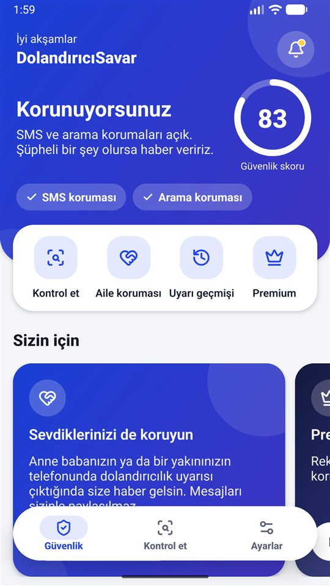
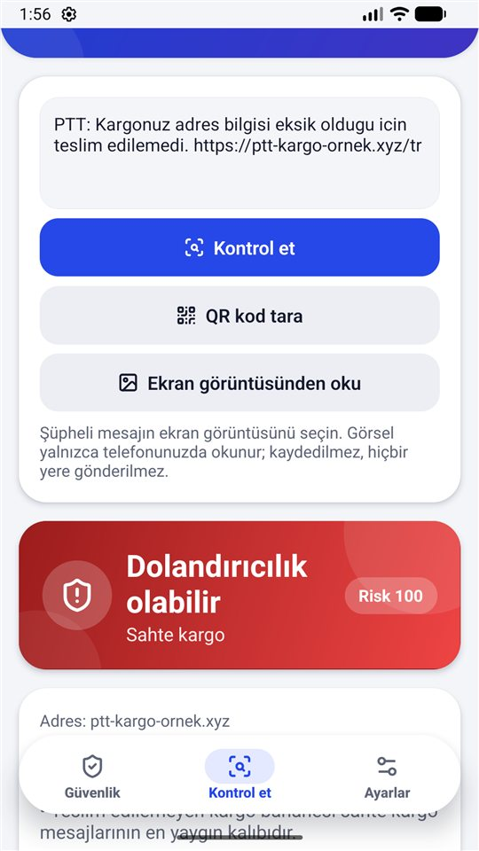
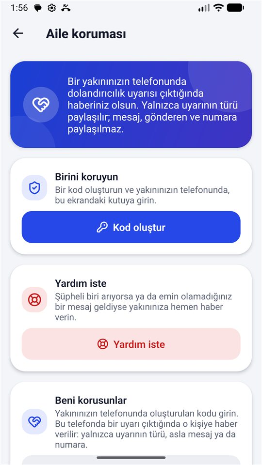

Ekran görüntüleri



Neler yapar
Şüpheli SMS uyarısı
"Kargonuz teslim edilemedi", "hesabınız askıya alındı", "anne, yeni numaram bu" gibi kalıpları tanır ve bildirimle uyarır. SMS okuma izni istemez.
Şüpheli arama uyarısı
Rehberinizde olmayan yurt dışı ve gizli numaralarda uyarır; bildirilmiş dolandırıcı numaralarını sessize alabilir ya da reddedebilir.
Link, QR ve ekran görüntüsü kontrolü
Şüpheli linki yapıştırın, QR kodu tarayın ya da mesajın ekran görüntüsünü seçin; taklit adresleri ve dolandırıcılık kalıplarını gösterir.
Aile koruması
Anne babanızın ya da bir yakınınızın telefonunda uyarı çıktığında size haber gelir. Yalnızca uyarının türü paylaşılır.
Telefon güvenlik kontrolü
Ekranınızı okuyabilen ya da uzaktan erişim sağlayan uygulamaları bulur; ekran kilidi ve güncelleme durumunu tek bir skorla gösterir.
Dolandırıcılık rehberi
En yaygın 12 dolandırıcılık türünü nasıl tanıyacağınızı ve ne yapmanız gerektiğini sade bir dille anlatır.
Premium
Temel koruma her zaman ücretsizdir. Premium tek seferlik bir ödemedir, abonelik değildir:
- Reklamsız kullanım
- 5 yakına kadar aile koruması (ücretsiz sürümde 1)
- WhatsApp, Telegram ve diğer mesajlaşma uygulamalarında koruma
- Haftalık koruma özeti ve 30 günlük koruma raporu
Gizlilik
Mesajlarınızın ve aramalarınızın içeriği yalnızca telefonunuzda incelenir; hiçbir sunucuya gönderilmez ve saklanmaz. Uygulamada hesap ve analiz aracı yoktur. Gizlilik politikasının tamamı
Verilerinizi silme
- Uyarı geçmişi: uygulamada Uyarı geçmişi → Geçmişi temizle. Kayıtlar yalnızca telefonunuzdadır ve 30 gün sonra kendiliğinden silinir.
- Aile koruması: Aile koruması ekranında bağlantıyı kaldırın; sunucudaki eşleşme ve olay kayıtları silinir. Olay kayıtları zaten 7 gün sonra silinir.
- Bildirdiğiniz numaralar: 90 gün sonra kendiliğinden silinir.
- Uygulamayı kaldırmak: telefonunuzdaki bütün uygulama verilerini siler.
Bunların dışındaki silme talepleriniz için antiscam.destek@gmail.com adresine yazın; en geç 30 gün içinde yanıtlanır.
Destek
Sorularınız ve geri bildirimleriniz için: antiscam.destek@gmail.com
DolandırıcıSavar; e-Devlet, PTT, bankalar, kargo şirketleri veya herhangi bir kamu kurumuyla bağlantılı değildir. Hiçbir uygulama bütün dolandırıcılıkları yakalayamaz; şüphelendiğinizde kurumu resmi numarasından arayın.